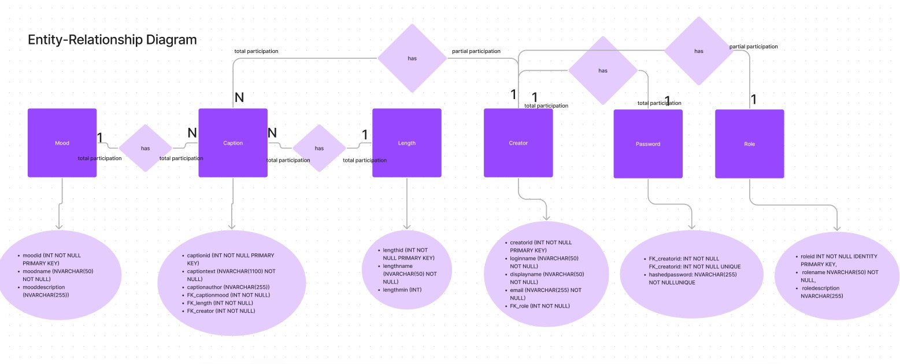
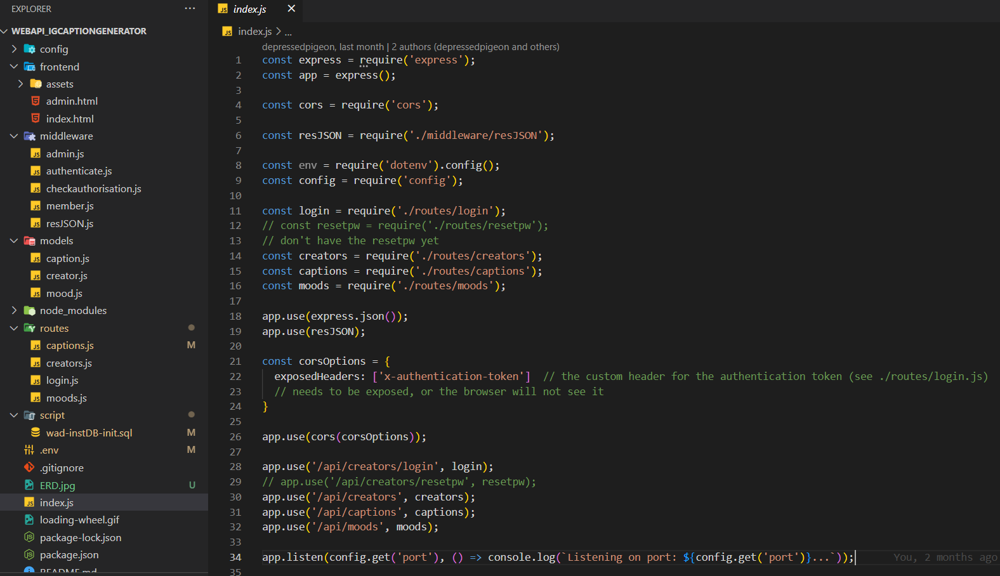

Instagram
caption
generator
Web API
Role - Developer
Technologies - Node.js, MSSQL,
JavaScript, HTML, CSS, Azure

Why would we build this project?
In September of 2022, during the Web API elective at UCN, every study group had to come up with an idea for a Web API, that would also be our exam project. The solution was supposed to be able to Create, Read, Update and Delete data (CRUD). After a short time of thinking, our group thought that an Instagram Caption Generator with a rich database would be a fun and useful project to solve.
The challenge
On top of handling CRUD requests, an other goal for the project was for it to be able to authenticate users and securely store their data. Different user roles were meant to have different authorities to perform certain actions. For example, only a registered and logged in user could upload new captions, and only an admin could delete users.
The project served as an introduction to back-end development, so that us, front-end developers got a better understanding of how the logic and data is connected behind the curtains. We had to get familiar with ERD's, Node modules like Express, Cors, Bcryptjs, Joi, Jsonwebtoken and Lodash. The data was stored on UCN’s MSSQL server, so we also gained experience working with a structured query language.
My role in the project
Our group consisted of three people. I spent the most time working on setting up the database and the routing as well as connecting the back-end with the front-end. The other developer focused on the authentication part of the web-app, while the third member gathered captions of different moods and lengths, and prototyped the full concept of the product.
Creating and deploying our own API and working with back-end tools was highly beneficial for me, as a front-end developer. I gained valuable knowledge that helps me understand how web applications are built, how data is stored and connected, and I became able to build one myself.
